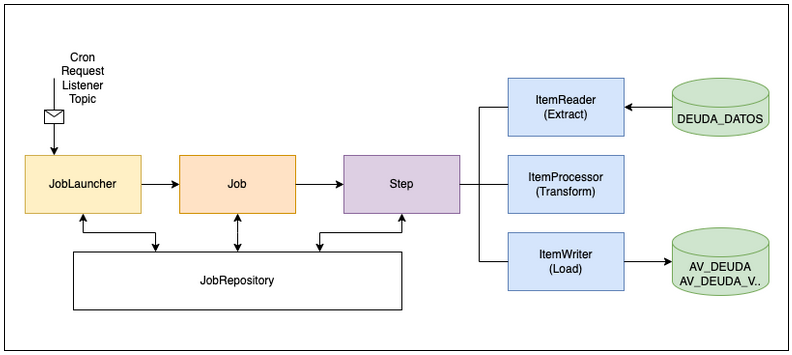

Introduccion de la empresa
Globant
Historia
Globant es una empresa de ingeniería de software y tecnología de la información originaria de
Argentina.
Fundada en el año 2003 por Martín Migoya, Guibert Englebienne, Martín Umarán y
Néstor Nocetti, todos ex empleados en la misma compañía, la consultora Tallion.
En medio de un contexto economico complicado por la megadevaluación de 2002, ellos compartian
una visión
a largo plazo: crear una gran multinacional. Como uno de sus fundadores menciona en entrevista
brindada al
diario Clarin, Veíamos que en el mundo había compañías que desarrollaban tecnología para los
países
desarrollados que la consumían, pero que esas compañías estaban en otros lugares, no
pertenecían al Primer
Mundo. Dijimos: en toda América latina no existe una firma que esté mirando a los mercados
globales, nosotros
podríamos ocupar ese lugar
(diario Clarin, 2019). Así nació Globant.
Fuente: Diario clarin - Historia de los fundadores de Globant. Silvia Naishtat, 2019.
Hoy la empresa es líder mundial en transformación digital y cognitiva, con su 'AI Mindset
Services' en el
centro de la propuesta de valor, está presente en 25 países y cuenta con más de 27.000
profesionales.
Globant trabaja para clientes de clase mundial como Google, Electronic Arts, NatGeo, Southwest
Airlines y
Coca Cola, entre otros. (pagina oficial de globant, 2023).
Fuente: Sitio institucional de Globant.
Volver al indice
Descripcion de la intervencion profesional
Marco Referencial
En el contexto de Globant, empresa cuyo nivel de madurez es elevado tanto a nivel tecnico como en procesos, el esquema de trabajo pone sus profesionales al servicio de terceros, como es mi caso de estudio con el cliente Western Union, en el cual me encontrare formando parte de un equipo profesional a cargo de el diseño de la arquitectura para la modernizacion de uno de sus modulos de centralizacion de deudas, las cuales son recolectadas de las entidades emisoras (prestadoras de servicios) y consumidas a su vez por agentes de pago electronico como MercadoPago, por nombrar uno. En este contexto, mis tareas estaran avocadas al diseño de implementaciones que provean mejoras a nivel de performance y escalabilidad.
Análisis y diseño de software
Cliente: Western Union
Proyecto: Migración de procesamiento de deuda por lote
Descripción
El cliente solicita la reestructuración de su sistema de procesamiento de lotes de pagos.
Por un pago entendemos
a un registro perteneciente a alguna entidad, por lo general prestadores de servicios, el
cual es previamente
ingresado al sistema de forma masiva, y debe ser sometido a un proceso ETL (extract,
transform and load) para poder
ser distribuido a distintos esquemas en bases de datos, los cuales son luego consumidos por
las entidades que
realizan el cobro a través de medios electrónicos.
Requerimiento
Mejorar la infraestructura de sistemas que forman parte del proceso ETL antes mencionado
mediante la implementación
de tecnologías actuales y la reestructuración del procesamiento, realizando la migración de
los procesos de
transformación de datos.
Situación actual
El procesamiento de lotes de pagos se realiza en dos fases:
Sumario - Tech stack
- Oracle12
- Java1.8
- Apache Camel
- Quartz
Sumario requerimientos
- Migración del proceso ETL.
- Actualización del motor de base de datos.
- Migración de cronometración cada 24 hs a near-real time
Propuesta
Proceso ETL
Implementación en framework Spring Batch, Paralelización del procesamiento de lotes mediante
paginado.
Disparador
Creación de endpoint en Spring Boot que reciba la información de un lote apto para
proceso.
Integración
Migración a Apache Kafka, implementación de API Kafka Consumers para la paralelización de la
cola de mensajería.
Migración de Oracle11 a Oracle19, Implementación de instancia réplica y separación de
procesos de lectura / escritura en distintas instancias.
Volver al indice
Metodología aplicada
Con el contexto dado, se pretende realizar una primera propuesta de arquitectura de alto nivel
usando una metodología
de documentación que integra partes del enfoque 𝗔𝗿𝗰𝗵𝗶𝘁𝗲𝗰𝘁𝘂𝗿𝗲 𝗗𝗲𝗰𝗶𝘀𝗶𝗼𝗻
𝗥𝗲𝗰𝗼𝗿𝗱𝘀 (𝗔𝗗𝗥𝘀).
Con ADR se documentan las decisiones tomadas durante el diseño y la implementación de un sistema o
aplicación de software.
Un ADR es un documento breve que captura la justificación detrás de una decisión arquitectónica
particular, las
alternativas que se consideraron y las compensaciones involucradas.
Fuente: ADR GitHub organization.
En cuanto a la metodología de trabajo y gestión del proyecto, se opta por utilizar Agile con soporte
de procesos provistos
por el cliente en la herramienta Azure DevOps.
La elección de Agile está ligada a la necesidad de realizar entregas parciales incrementales de los
componentes.
Propuesta de implementación
Se describen a continuación los componentes que se plantean implementar para la modernización del servicio. La propuesta incluye tanto aspectos técnicos específicos como también el análisis correspondiente de la funcionalidad de los componentes correspondientes.
Bills Data Loader
Microservicio que obtiene las facturas de los usuarios inscritos a WU e invoca al Job Processor de
forma asincrónica con la
factura que debe procesarse en el sistema. Aplica reglas de negocio antes de acudir al servicio de
pago.
No se obtendrán las facturas correspondientes a usuarios no inscritos y por lo tanto estas no serán
procesadas posteriormente
por el Job Processor.
Funcionalidades que se implementarán: Obtener Facturas de Entidades 100% en línea y Obtener
Facturas de Entidades por
Lote dentro del esquema de WU.
Job Processor
Responsable de procesar las facturas de los usuarios inscritos que provienen de la comunicación con
el componente BIlls Data
Loader. Aplica reglas antes de persistir las facturas.
Funcionalidades que se implementarán: cargado de facturas al esquema de procesamiento.
Flujo de Componentes
A continuación se detallan los procesos con los flujos más importantes.
Procesamiento por lotes
El componente Bills Data Loader solicitará datos de lotes a procesar al esquema de WU. Antes de transmitir los mismos, el componente Bills Data Loader utilizará un módulo de reglas (biblioteca interna) para obtener las reglas para procesar las facturas.
Principales beneficios de la arquitectura
Utilizando esta arquitectura basada en microservicios reactivos podemos obtener importantes beneficios como:
- Gobernanza descentralizada: cada microservicio opera de forma independiente, con su propio ciclo de vida, equipo de desarrollo y canal de implementación.
- Implementación independiente: los microservicios se pueden implementar de forma independiente entre sí, lo que permite una entrega más rápida de nuevas funciones y correcciones de errores.
- La arquitectura de microservicios implica dividir una aplicación monolítica en funciones o servicios componentes, que luego se conectan libremente a través de API. Esto permite una escalabilidad mejorada, un mejor aislamiento de fallas y un tiempo de disponibilización más rápido.
- Cada microservicio en esta arquitectura puede implementarse en cualquier idioma y ejecutarse en cualquier plataforma, ofreciendo flexibilidad en el uso de las mejores herramientas para las necesidades de cada proyecto.
- Aspectos de seguridad: los microservicios permiten una mejor seguridad, ya que cada servicio es responsable de una tarea específica, lo que facilita la implementación de medidas de seguridad a nivel de servicio. Las políticas de autenticación y autorización, la estrategia de tokenización, los certificados y las definiciones de cifrado se definirán, documentarán e implementarán en la fase de construcción, si es necesario.
- Al desacoplar el consumo de datos por parte de otras API’s de los procesos de escritura (Job Processor que usa una instancia de base de datos de escritura) se brinda más flexibilidad y aumenta el consumo de carga de trabajo sin afectar las operaciones de escritura de la base de datos (operaciones bloqueantes).
- La escalabilidad viene con la plataforma Kubernetes y se puede realizar de forma horizontal o vertical.
Propuesta de mejora del procesamiento por lotes
Proponemos la migración de la lógica de procesamiento que actualmente se realiza en PL/SQL a Spring
Batch. Esta herramienta, que está diseñada implementando patrones de diseño como Builders, Factorys,
Chain of responsability y Adapters, entre otros, mejorará enormemente el rendimiento del proceso ETL
(Extracción, Transformación y Carga) al procesar entidades en fragmentos de datos de tamaño
definido.
permitiendo que las operaciones de lectura y escritura se realicen de forma menos recurrente.
El procesador de datos se activará al consumir eventos de un mensaje del Bills Data Loader. Al
recibir
eventos de esta fuente, puede aprovechar los beneficios de las colas de mensajería, como la alta
escalabilidad, la tolerancia a fallas y la velocidad.
Diagrama de arquitectura de JobProcessor

Detalles de los componentes:
- JobLauncher: Ejecuta objetos de trabajo por lotes.
- Job: Objeto de dominio por lotes. Job es una abstracción explícita que representa la configuración de un trabajo.
- Step: Representa la configuración de un paso pero también la capacidad de ejecutar el paso.
- ItemReader: Objeto con varias estrategias para extraer datos como elementos de entrada por lotes.
- ItemWriter: Objeto con lógica para conservar los datos de los elementos de salida.
- ItemProcessor: Realiza la transformación del elemento cargado proporcionado y devuelve el elemento que se va a escribir.
- JobRepository: Proporciona persistencia de los metadatos de los trabajos (parámetros).
- Más escalabilidad, tolerancia a fallos y mantenibilidad.
- Menos operaciones de lectura/escritura debido al uso de fragmentos de datos en operaciones de extracción (lectura) y carga (escritura).
- Altamente configurable/parametrizable.
- Mejor rendimiento en el proceso de transformación debido a la paralelización.
- Más legibilidad y flexibilidad para futuras mejoras.
Para tener mayor claridad sobre el desempeño general de este componente, realizamos una prueba de concepto, en la que se utilizaron dos bases de datos, una para leer registros y otra para insertarlos en dos tablas separadas. La idea con este ejercicio es tener referencias de los recursos que consume y el tiempo que lleva realizar el proceso ETL y las operaciones pre y post base de datos. Los siguientes valores se obtuvieron de una tabla de muestra de 199918 filas y cada columna indica el tamaño del fragmento de datos.
| Cant. Registros | Memoria | Duración |
|---|---|---|
| 100 | 60 megas | 15s623ms |
| 1000 | 90 megas | 9s646ms |
| 5000 | 100 megas | 9s169ms |
| 10000 | 110 megas | 9s678ms |
| 20000 | 110 megas | 9s511ms |
CPU: Apple M2
Memoria: 16Gb
Memoria base utilizada por la aplicación: 50 MB
Herramienta y detalles del proceso cronometrado
Dado que toda la nueva arquitectura se orquestará en Kubernetes, recomendamos reemplazar la
herramienta
cron existente que lee las bases de datos de WU por una de las siguientes opciones:
CronJob
CronJob es muy útil en nuestro contexto ya que los trabajos se ejecutan en sus propios contenedores separados. Esto nos permite asociar CronJob a una versión específica de un contenedor, actualizar cada cron individualmente y personalizarlo con las dependencias específicas que necesite.Con la opción CronJob, podemos configurar los recursos que utilizará su contenedor. Además esta herramienta tiene una política de reintento incorporada. Si un CronJob falla, podemos definir si debe ejecutarse nuevamente y cuántas veces debe reintentar.
La implementación se realiza en un archivo YAML simple.
WebHook
En pocas palabras, un WebHook es un retorno de llamada HTTP POST que podría ocurrir de forma cronometrada; una simple notificación de evento. Una aplicación web que implemente WebHooks publicara un mensaje en una URL cuando suceda cierto evento, como que un nuevo lote esté listo para ser procesado. Esta herramienta enviaría un mensaje al propio Job Processor.La implementación es muy sencilla y casi no necesita mantenimiento.
Comunicación entre Microservicios
Para la orquestación de la comunicación entre los microservicios Bills Data Loader y Job Processor,
proponemos el uso de llamadas de solicitud HTTP no bloqueantes, con WebFlux como herramienta
sugerida.
Nos permite configurar no sólo el envío de mensajes HTTP entre servicios, sino que también permite
la
implementación de paralelización en el componente Job Processor. Con esto podremos lograr una
implementación efectiva y eficiente en cuanto al procesamiento paralelo de facturas,
independientemente
del origen.
Diagrama de implementación de WebFlux

Gestión de datos
De acuerdo con nuestra propuesta, toda la lógica relacionada con los procedimientos almacenados se
migrará a una versión programática en Spring Batch (Ver apartado Propuesta de mejora del
procesamiento por lotes para más detalles).
En cuanto a la persistencia de datos, proponemos migrar a una base de datos Oracle 19 y agregar una
réplica de sólo lectura usando Oracle DataGuard para la sincronización de las instancias.
Al realizar esta separación por tipo de operación aseguramos una mayor velocidad de respuesta tanto
para la carga como para el consumo.
Volumetría estimada
Las siguientes tablas muestran valores mensuales tomados del último trimestre que abarca de junio a
agosto del presente año. Los tomaremos como valor estimado del posible incremento de la concurrencia
de
servicios y tratamientos de datos.
Facturas creadas por mes
| Mes | Cantidad |
|---|---|
| 2023-06 | 8.798.726 |
| 2023-07 | 9.747.634 |
| 2023-08 | 5.401.234 |
Concurrencia de Facturas consumidas por Minuto
| Minuto | Cantidad | Promedio estimado/hora |
|---|---|---|
| 2023-08-04 11:08:00 | 3.222 | 193.320 |
| 2023-08-04 11:08:46 | 3.205 | 192.300 |
| 2023-08-04 11:08:20 | 3.199 | 191.940 |
Registros máximos creados por día
| Día | Cantidad |
|---|---|
| 2023-09-04 | 35.201.759 |
En este punto, se propone la escalabilidad horizontal a través de la replicación de instancias de procesamiento ante un aumento en estas cantidades, posibilidad que ofrecen los servicios stateless, como es el caso de cada uno de los componentes que se construirán para este proyecto.
Volver al indice
Conclusión sobre la práctica realizada
Una de las primeras conclusiones a las que arribé durante el diseño de la solución propuesta para Western Union fue sobre la problemática asociada a los cambios de tecnología que enfrentan los sistemas. El creciente avance en el desarrollo de librerías, componentes built-in altamente configurables y arquitecturas holgadamente escalables y de alta disponibilidad ponen en clara evidencia cómo los sistemas se deterioran a un ritmo cada vez más veloz. La problemática de WU es un claro ejemplo de cómo las empresas muchas veces deben invertir recursos en la modernización mediante desarrollo evolutivo en términos de infraestructura y arquitectura en vez de implementar nuevas funcionalidades en sus sistemas para continuar siendo competitivos.
En cuanto a lo técnico, la experiencia de diseñar una solución de estas características me llevó a la investigación exhaustiva de tecnologías, algunas de las cuales conocía únicamente por su nombre, como es el caso de Spring Batch, y otras que resultaron completamente nuevas para mi, como Redis Streams, CronJob y WebHook.
Es en este punto en donde la reflexión me lleva a considerar donde reside la máxima fortaleza de todo buen profesional que se desempeña en el rubro tecnológico: la curiosidad. Sin curiosidad, no hay límites que atravesar, ni nuevos desafíos que superar, y por consecuencia, no tendríamos a las inteligencias artificiales generativas como Chat GPT con las que hoy conversamos, ni tendríamos vehículos espaciales reutilizables como el Falcon 9 de SpaceX e incluso no estaríamos en las puertas de automatizar la conducción de vehículos de calle mediante sistemas autónomos, como en los vehículos Tesla y Mercedes Benz, entre otros.
Por otro lado, y volviendo sobre el objetivo de esta conclusión, esta práctica me llevó a poder asumir una mirada de alto nivel de los componentes que conforman un sistema de porte empresarial y de cómo se orquestan para realizar el procesamiento de datos. Esto lo encuentro de mucho interés y sumamente enriquecedor, ya que en la labor de desarrollo, muchas veces esta mirada queda acotada solo para arquitectos, y es justamente en ese rol en el cual me gustaría desempeñarme como futuro Ingeniero en Software profesional.
No podría finalizar sin antes reconocer la importancia que tuvo en esta práctica el trabajo en equipo junto a gente muy talentosa que confío plenamente en mi criterio y para la cual tengo la dicha de haberme convertido en un recurso clave a la hora no solo del diseño de la arquitectura y de los componentes, sino también la co-redacción de documentación técnica, la invitación a la participación activa en reuniones con el cliente y la posibilidad de realizar modelado de datos, componentes y arquitectura.
Entregables realizados
Nota: No se adjuntan los archivos de los entregables antes mencionados por estar sujetos a acuerdos de confidencialidad firmados entre Servicios Globales S.A. y Western Union Financial Services S.R.L.